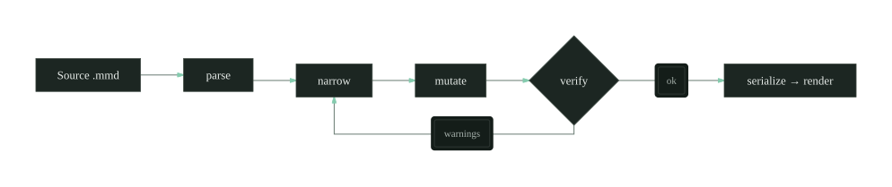

Docs / The edit loop
Editing a diagram without regenerating it
A render-only tool makes an agent rebuild the whole diagram to move one node. Agentic Mermaid keeps the diagram structured, so an edit is five small steps, and verify gates the last one.
The Manual · Updated 22 June 2026 · Generated from capabilities.json · 6 min read
Most diagram tools render and stop. You hand them source, they hand back a picture, and to change one node you send the whole source again. That is fine for a person editing by hand and wasteful for an agent editing in a loop, where every regeneration risks moving nodes that were already correct.
The fix is to treat an existing diagram as structured data, not a string. A typed surface exposes the parts an agent can name and change, and refuses edits it cannot make safely. The loop has five steps.
1 · Parse
Read the source into a typed model. Anything the model does not understand round-trips through preserved source,An unusual block — a raw journey body, say — is carried verbatim as a string and re-emitted untouched, so parsing never silently drops what it cannot model. so an unusual block is carried verbatim rather than dropped.
2 · Narrow
Select the one node or edge the edit touches. Narrowing keeps the change local,Locality is the whole game: touch one node and the other forty keep their coordinates, so a one-line edit can’t reflow the diagram. which is what protects the rest of the layout from drifting.


verify sits between mutate and serialize; a warning sends the work back to narrow.3 · Mutate
Apply a named operation to the narrowed selection. The operation returns a new typed model; it does not rewrite the source by hand.
mutate(diagram, addEdge: { from: "verify", to: "serialize", label: "ok" })
// returns a ValidDiagram, or a structured error4 · Verify
Check the result before trusting it. verify returns warnings in three tiers — structuralTier 1 — the graph is malformed: a dangling edge, a duplicate id, an edge to a node that isn’t there. Blocks serialize; never ship past one., geometricTier 2 — valid but ugly: overlapping nodes, a label crossing an edge, a port on the wrong side. Advisory, not fatal., and lintTier 3 — style and lossiness: a non-canonical arrow, or a dropped comment. Cosmetic. — plus perceptual quality metrics.Scored by the deterministic rubric in layout-rubric.ts, not asserted by the agent. The same diagram always scores the same, so you can diff a metric across edits and watch it move. An agent reads the tiers and decides whether to fix, re-narrow, or stop and ask a human.
verify(diagram)
✓ ok structural 0 geometric 0 lint 1
// COMMENT_DROPPED line 4 — inline %% comment removed on serializeThe one lint here is a dropped commentCOMMENT_DROPPED, line 4. The inline %% comment isn’t representable in the typed model — move it onto its own line above the node to keep it. on line 4. Across this diagram’s five edits, legibility climbed to 0.98 and edge crossings fell to 0.
5 · Serialize
Write the typed model back to Mermaid source, then render to SVG, PNG, ASCII, or Unicode. Because layout is deterministic,Same input, same bytes — no RNG, no clock. A CI snapshot of the SVG is stable, so a diff means a real geometry change, not noise. the same model produces the same geometry every run.
Stop rule. Never return a diagram you have not verified, and never fabricate a passing result. If a structural warning will not clear after two attempts, serialize what you have and ask a human to look.
The loop is the product: parse, narrow, mutate, verify, serialize. The picture is only the last step, and the only one a render-first tool ever gives you.
More in the manual
- Reading a verify result — the three warning tiers, with fixes
- Source-level edits for opaque bodies — journey, xychart, architecture
- Rendering to ASCII and Unicode — color modes and terminal use